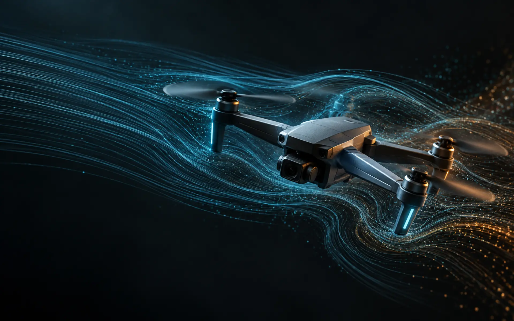

Conseil & cadrage IA
Identifier les cas d’usage à valeur ajoutée, évaluer leur faisabilité et construire une feuille de route réaliste.
- Audit des besoins et des données
- Étude de faisabilité
- Choix technologiques et architecture
Conseil · Ingénierie · Intégration
Next IA accompagne les entreprises dans la conception, l’intégration et la mise en œuvre de solutions d’intelligence artificielle et de systèmes informatiques fiables, efficaces et adaptés à leurs usages.

01 Du besoin métier au prototype
02 De l’algorithme à l’intégration
03 Du cloud au matériel embarqué
01 / Services
Un accompagnement technique complet, dimensionné selon votre maturité, vos données et vos contraintes opérationnelles.
Identifier les cas d’usage à valeur ajoutée, évaluer leur faisabilité et construire une feuille de route réaliste.
Développer des modèles et prototypes sur mesure pour répondre à un besoin métier clairement défini.
Connecter l’IA à vos applications et transformer un prototype en composant exploitable.
Concevoir les briques logicielles et flux de données nécessaires au fonctionnement durable de la solution.
02 / Méthode
Clarifier le problème, les utilisateurs, les données disponibles et les critères de réussite.
Construire une preuve de concept ciblée pour tester rapidement la valeur et les risques.
Connecter la solution à votre environnement logiciel, matériel et opérationnel.
Évaluer précision, latence, robustesse et coût afin d’orienter les améliorations.
03 / Expertise
Next IA intervient sur toute la chaîne de valeur : préparation des données, modélisation, évaluation, optimisation et déploiement. Cette continuité permet de concevoir une IA compatible avec les contraintes réelles du terrain.
PyTorch · TensorFlow · scikit-learn · Pandas · NumPy · OpenCV
LLM · RAG · FAISS · QLoRA · Hugging Face · agents
ONNX · NCNN · RKNN · FP16 · INT8 · CPU · GPU · NPU
Python · C/C++ · FastAPI · Linux · APIs · systèmes embarqués
04 / Travaux & démonstrateurs
Des travaux R&D représentatifs des domaines couverts par Next IA, de l’embarqué à l’IA générative.
Pipeline complet utilisant la télémétrie embarquée pour estimer le vent 3D et les forces aérodynamiques, puis déployer le meilleur modèle sur différents matériels.
PyTorch · GRU/LSTM/TCN · ONNX · AirSim · PX4
Assistant fondé sur un modèle 7B, une adaptation QLoRA 4 bits et une recherche FAISS dans des sources médicales de référence.
DeepSeek · QLoRA · FAISS · Hugging Face
Classification par transfert d’apprentissage sur images contrôlées et terrain, avec une application d’inférence légère.
MobileNetV2 · TensorFlow · OpenCV · Flask
05 / À propos
France · Projets sur mesureNext IA est une micro-entreprise portée par Abdou, ingénieur diplômé d’un Master 2 en Intelligence Artificielle. Son expérience associe recherche appliquée, développement logiciel et déploiement de modèles sur des plateformes aux ressources contraintes.
L’objectif : rendre l’intelligence artificielle compréhensible, mesurable et réellement intégrable dans votre organisation.
06 / Votre projet
Échangeons sur votre contexte, vos données et la première étape la plus utile pour avancer.
Découvrir le profil technique